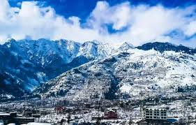
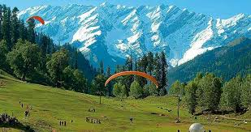
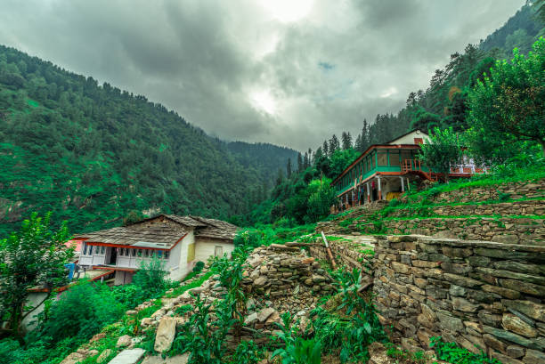
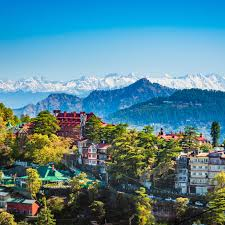
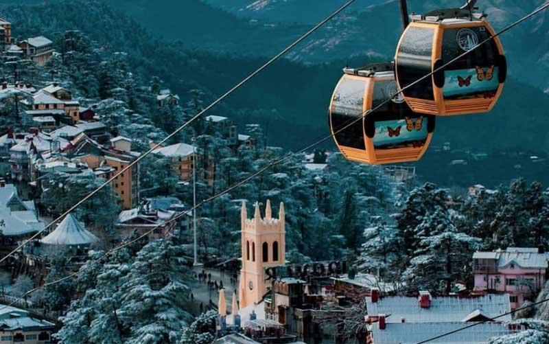
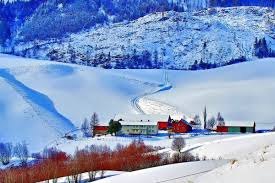

Highlights
- The Mall Road: This bustling street is the heart of Shimla, lined with shops, cafes, and restaurants. It’s perfect for leisurely strolls and enjoying the scenic views.
- Jakhoo Temple: Situated on Jakhoo Hill, this temple is dedicated to Lord Hanuman and offers panoramic views of the surrounding mountains. The walk to the temple is picturesque, and you might even spot some monkeys along the way.
- Christ Church: An iconic landmark in Shimla, this beautiful neo-Gothic church features stunning stained-glass windows and a peaceful ambiance. It's located near the Mall Road, making it an easy stop during your visit.
- Solang Valley: Known for adventure sports, Solang Valley offers activities like skiing, paragliding, and zorbing in winter, while in summer, it’s great for trekking and horse riding.
- Hadimba Temple: Surrounded by cedar forests, this ancient temple dedicated to Goddess Hadimba is known for its unique architecture and serene atmosphere. The temple is set in a picturesque location, adding to its charm
- Rohtang pass: A must-visit for breathtaking views and snow activities, Rohtang Pass is a high mountain pass that offers stunning landscapes and a chance to enjoy snow even in summer.
- Old Manali: This quaint village is known for its laid-back vibe, cafes, and stunning views. It's a great place to relax, explore local culture, and enjoy the beautiful landscapes.





  
Delightful Himachal Holidays
Day 1: Arrival in Shimla
- Morning: Arrive in Shimla. Check into your hotel and relax.
- Afternoon: Visit The Mall Road for shopping and exploring local eateries. Enjoy lunch at one of the cafes.
- Evening: Take a leisurely stroll to Christ Church and admire the architecture.
Day 2: Jakhoo Temple and Kufri
- Morning: After breakfast, head to Jakhoo Temple. Enjoy the scenic walk and views from the hilltop.
- Afternoon: Visit Kufri, a popular hill station near Shimla. Engage in activities like horse riding or visit the Kufri Fun World amusement park.
- Evening: Return to Shimla. Relax at your hotel or enjoy dinner at a local restaurant.
Day 3: Transfer to Manali
- Morning: Check out from your hotel after breakfast and depart for Manali (approximately 7-8 hours by road). Enjoy the scenic drive through the mountains.
- AAfternoon: Arrive in Manali, check into your hotel, and relax.
- Evening: Explore Mall Road in Manali for shopping and local cuisine.
Day 4: Manali Sightseeing
- Morning: Visit Hadimba Temple, located amidst cedar forests. Explore the area and enjoy the serene environment.
- Afternoon: Head to Solang Valley for adventure activities like paragliding, zorbing, or simply enjoying the beautiful views.
- Evening: Return to Manali and have dinner at a nearby restaurant.
Day 5: Rohtang Pass Excursion
- Early Morning: Depart early for Rohtang Pass (about 51 km from Manali). Ensure you have any necessary permits, as they can be limited.
- Day Activities: Enjoy breathtaking views, play in the snow, and engage in various snow activities like skiing or sledding.
- Evening: Return to Manali and relax at your hotel.
Day 6: Manali to Kullu
- Morning: After breakfast, check out from your hotel and head to Kullu (approximately 1.5 hours by road). Visit the Kullu Valley, famous for its stunning landscapes.
- Afternoon: Explore Kullu by visiting the Kullu Dussehra Festival (if visiting in October) or the Raghunath Temple. Engage in activities like river rafting or trekking, depending on the season.
- Evening: Check into your hotel in Kullu and enjoy dinner.
Day 7: Departure from Leh
- Morning: Enjoy breakfast at your hotel. If time permits, explore local markets for souvenirs.
- Afternoon: Check out from your hotel and begin your journey back home or to your next destination.